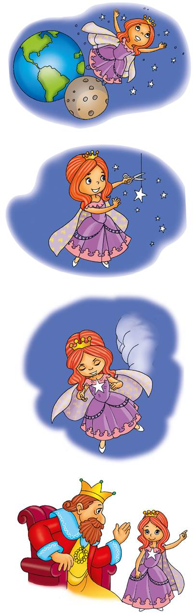

Poemas que nos cuentan cuentos
Alumno:
Poemas que nos cuentan cuentos
Alumno:
Margarita, está linda la mar
y el viento,
lleva esencia sutil de azahar;
yo siento
en el alma una alondra cantar
tu acento:
Margarita, te voy a contar
un cuento:
Este era un rey que tenía
un palacio de diamantes,
una tienda hecha del día
y un rebaño de elefantes.
Un kiosco de malaquita,
un gran manto de tisú,
y una gentil princesita,
tan bonita,
Margarita,
tan bonita como tú.
Una tarde, la princesa
vio una estrella aparecer;
la princesa era traviesa
y la quiso ir a coger.
La quería para hacerla
decorar un prendedor,
con un verso, una perla,
una pluma y una flor.
Las princesas primorosas
se parecen mucho a ti:
cortan lirios, cortan rosas,
cortan astros, son así.
Pues se fue la niña bella,
bajo el cielo y sobre el mar,
a cortar la blanca estrella
que la hacía suspirar.
Y siguió camino arriba,
por la luna y más allá;
mas lo malo es que ella iba
sin permiso del papá.
Cuando estuvo ya de vuelta
de los parques del Señor,
se miraba toda envuelta
en un dulce resplandor.
Y el rey dijo: —¿Qué te has hecho?
te he buscado y no te hallé;
y ¿qué tienes en el pecho
que encendido se te ve?
La princesa no mentía,
Y así, dijo la verdad:
—Fui a cortar la estrella mía
a la azul inmensidad.

La princesita está bella,
pues ya tiene el prendedor
en que lucen, con la estrella,
verso, perla, pluma y flor.
Margarita, está linda la mar,
y el viento
lleva esencia sutil de azahar:
tu aliento.
Ya que lejos de mí vas a estar,
guarda, niña, un gentil pensamiento
al que un día te quiso contar
un cuento.
 Comprendo para saber
Comprendo para saber
Los poemas también cuentan historias. Estos cuentos en verso suenan melodiosos y son muy divertidos. También favorecen nuestra memoria. Si los repetimos en voz alta, perfeccionamos nuestra pronunciación. Un hermoso ejemplo es este poema de la escritora española Gloria Fuertes. Disfruta su lectura.
Por la mañana,
el dentista de la selva
trabajó intensamente
con un feroz cliente.
Era el rey de la jungla,
un león imponente,
con colmillos cariados
y dolor de los dientes.
Por la tarde, cansado,
le dice a su enfermera
que anuncie en un cartel
y lo pegue en la puerta:
Por hoy no más pacientes;
que llegó el cocodrilo,
con sus más de cien dientes,
y diez muelas dolientes.